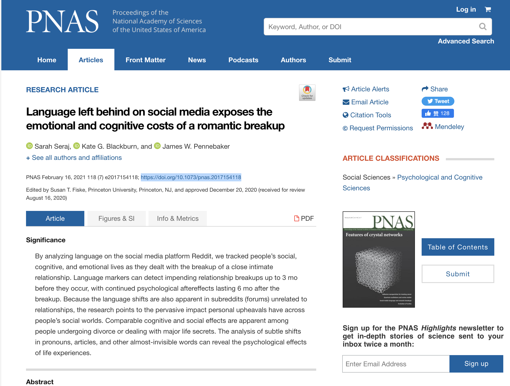
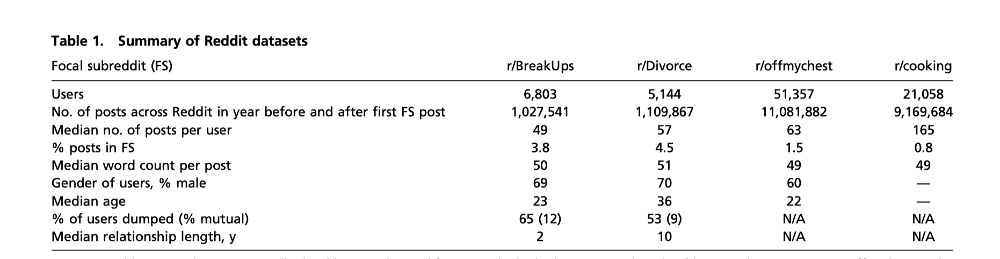
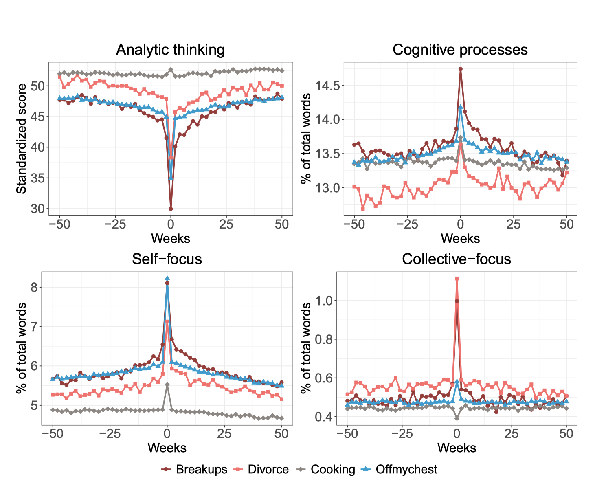
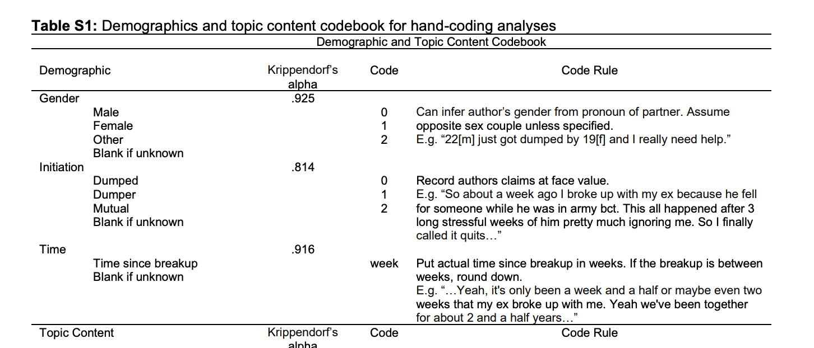
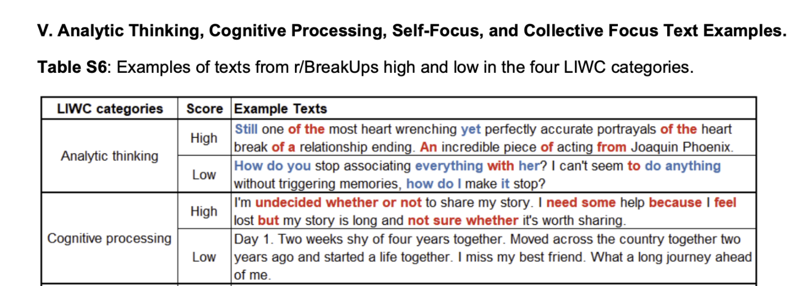
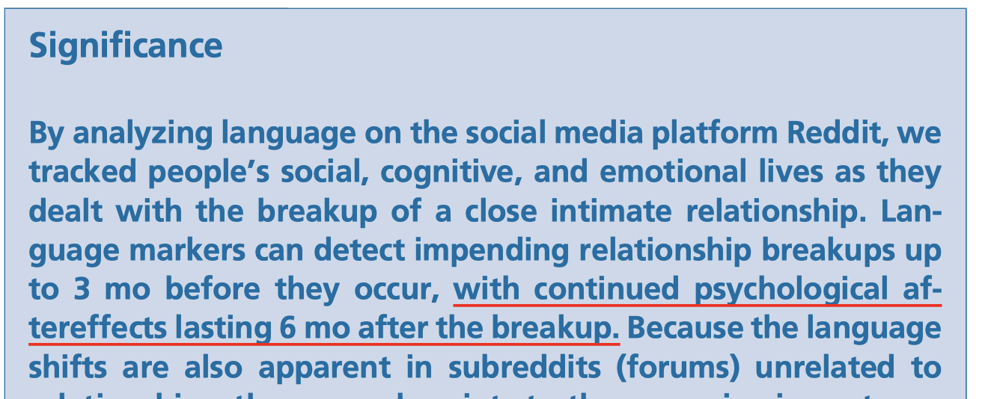

公众号-新智元
编辑: 桃子 小咸鱼
女朋友提出分手，你是不是后悔没有早点察觉？
这不，对于分手前的有关迹象，科学家给出了答案：聊天记录！
近日，美国德克萨斯大学的研究人员发表的一篇论文表明，通过分析情侣的聊天记录，可以找到情侣即将分手的证据。
这篇 Language left behind on social media exposes the emotional and cognitive costs of a romantic breakup 已于12月20日发表在国际顶刊PNAS。

分手前三个月，聊天便不正常了
基于已有的数据，研究人员对6800名Reddit用户发布的1027541个帖子进行了文本分析。

这些帖子涵盖了用户在过去2年里的Reddit发帖数据，这些帖子的内容不仅仅与他们的感情关系有关，也涵盖了他们生活中各个方面的内容。
语言标记
表示「即将分手」的「语言标记」在分手发生前3个月出现的频次非常高，在分手的那一周达到峰值，并在6个月后恢复到正常基线。
在表示「即将分手」的「语言标记」中，出现次数比较多的是「我」、「我们」这类字眼，以及暗含认知过程（cognitive processing ）的词汇（常常表示抑郁、高度集中的注意力、探究意义等）。

分手前后Reddit用户语言模式的变化。第0周是每个用户在分手时公开披露分手的时间点。
此外，「语言标记」中有关「分析思考」（analytic thinking）的词汇的出现频次会下降，与「分析思考」相关的词汇往往包含更多以个人为中心和非正式的语言。
研究人员还发现，即使人们在与分手这类话题无关的群组中发帖，上述这种「语言标记」模式仍然存在。
要注意了！
与偶尔发一次帖的人相比，那些经常发布分手信息的人在分手一年之后，适应能力会变得很差。
83%的人都会以第一人称发送第一次分手的信息，并且这些帖子详细描述了分手过程，甚至导致分手的原因和分手的后果都有。

例如，一位网友通过回忆来讲述自己分手的故事：
“Hey breakups, going through a rough one this week. The girl I’ve been seeing the last 7 months left me last Friday due to us not having common interests. Our relationship seemed just awesome and thought we were happy. We did get into a “routine” pretty fast and I was happy with it. Cook dinner, sex, watch movies together. I knew going into this with her she was a free spirited outdoorsy type and I am admittedly the opposite. But we sparked, and formed a relationship after a few months of talking. Things seemed great. We lived maybe 45 minutes away from each other and had different work schedules, so we only saw each other maybe 3 times a week, so it was sometimes hard to see each other…”
分析思考和认知过程
尽管许多情侣关系解体模型都强调了分手过程中固有的认知思维，但没有一项研究能够实时跟踪认知过程。
同时，研究人员在研究认知过程的变化时面临着几个艰巨的挑战，包括如何识别和测量感兴趣的认知动态。
研究人员最近的工作确定了两种基于语言的通用思维模式：一是分析思考，另一是认知过程。

说话以「我」、「我们」为焦点
回想下，排除第三者关系，女友和你提出分手前，是不是经常会说「我….」
正如研究人员指出，当分手发生时，人们会向内去理解发生关系破裂的原因，这有时会让人陷入沉思和情绪困扰 。
在与抑郁、自杀、情绪剧变、消极和心理困扰相关的报告中，「我」这个词是最常见的。这表明 「我」的使用能够捕获内部的焦点和个人内部的关注。
同样，在情侣关系研究中，在分手之前、之中和之后查看「我」字的使用可能是一种不错的方法，来跟踪人们在整个分手过程中的对自我关注和调整。
在分手期间，人们可能会深究对方的前任伴侣和两人间的关系。
「我们」一词，揭示了情侣间的关系承诺、继续关系的意图和解决问题的行为等等信息。
而情侣之间更多地使用「我们」一词突出了成功的浪漫关系背后靠的是情侣间的相互依存性。
但是，如果情侣间的关系变坏呢？
一些研究发现，经常分享分手故事的人，如果开始频繁地使用「我们」这个词，这种现象就预示着他和他伴侣间的关系会变得更差。
分手后遗症
在人们的社交生活与其在线状态交织在一起的时代，研究分手和其他个人心情动荡出现了新的方法。
通过研究社交媒体帖子，研究人员已经发现了与人们情绪和心理状态相关的语言模式，例如抑郁症、创伤后应激障碍诊断和注意缺陷多动障碍症状。
通过对社交媒体平台中人们的语言进行分析，研究人员最终可以追踪人们在分手时不断演变的心理过程。
正如研究者指出，真正分手后会持续6个月的心理影响。

分手后遗症，你有吗？
数据下载
4.8G,含代码